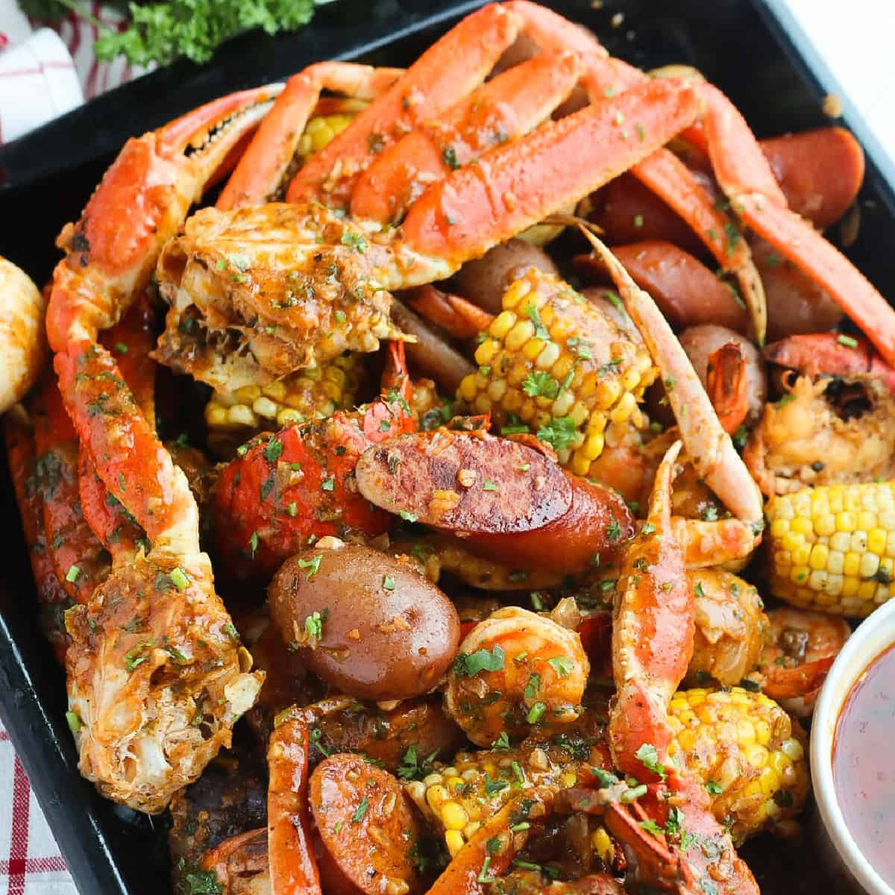

Fish Tacos Recipe
Description
This is the BEST Seafood Boil recipe you can whip up right at home, y’all. It’s loaded with jumbo shrimp, crab, andouille sausage, potatoes, eggs, and corn on the cob that’s simmered in a flavor-filled broth of cajun spices and aromatics. All that hearty goodness gets drowned and smothered in an epic garlic butter sauce. This finger-licking-good seafood boil recipe is an easy meal that serves a crowd!

Ingredients
- 3 quarts water
- 1 (12-ounce) can of beer- optional but highly recommended
- 3 tablespoons Creole Cajun Seasoning– homemade or store-bought
- 1 tablespoon Old Bay seasoning
- Hot sauce, to taste
- 1 medium yellow onion, roughly sliced into half-moons
- 1 large lemon, cut into wedges
- 12 ounces andouille sausage, sliced into rounds
- 1 lb baby potatoes
- 1 lb pre-cooked snow crab leg clusters, fresh or frozen
- 1 – 1 ½ lbs jumbo shrimp
- 4–6 ears sweet corn on the cob
- 4–6 hard boiled eggs- optional
For the garlic butter sauce:
- 1 cup (2 sticks) unsalted butter
- 10 cloves of garlic, finely minced or pressed
- 2 tablespoons lemon juice
- 1 tablespoon Old Bay seasoning
- 1 tablespoon fresh chopped parsley
- 1 teaspoon Creole Cajun Seasoning
- 1 teaspoon smoked paprika
Steps
- Prepare the boil. In an extra large stockpot or dutch oven (about 10 quarts or larger) over medium-high heat, combine the water and beer (if using). Bring the liquid to a boil. Then season the boil with the Creole Cajun seasoning, Old Bay seasoning, and a few dashes of hot sauce- to taste. Add the sliced onion and lemon wedges into the pot. Stir all the ingredients well to thoroughly combine. Let the mixture boil for 15 minutes.
- Add the andouille & potatoes. Carefully add the andouille sausage rounds and baby potatoes into the pot, stirring well to fully combine with the boil. Let the andouille and potatoes cook for 15-20 minutes- or until the potatoes are just about fork-tender.
- Add the seafood & corn. Gently nestle the snow crab clusters into the pot along with the shrimp and corn on the cob. Be sure that everything is fully submerged under the boil and carefully stir to ensure all ingredients are well combined. Continue boiling for another 5-7 minutes, cooking until the shrimp is pink. Meanwhile, prepare the garlic butter sauce.
- Make the garlic butter sauce. On a separate burner, in a small saucepan over medium heat, combine the butter, garlic, lemon juice, Old Bay seasoning, parsley, Creole Cajun seasoning, smoked paprika, and hot sauce- to taste. Stir all ingredients and simmer the sauce until the butter melts and the sauce is well combined, stirring often, about 6-7 minutes. Then remove from heat.
- Assemble cajun seafood boil with sauce. Line an extra large baking sheet with foil/parchment paper (or newspaper if you’d like!). Use a spider strainer to remove the seafood boil contents from the pot and place onto the prepared baking sheet along with the hard boiled eggs (if using)- remove and discard the onion/lemon bits. Note: If you’d like your garlic butter sauce to be thinner, you can add some of the seafood boil broth to adjust to desired consistency. Now, this is the fun part! Pour the garlic butter sauce over the seafood boil ingredients. Then use your hands (fitted with disposable gloves if desired) to toss the sauce with everything, smothering every nook and cranny in sauce.
- Serve seafood boil. Feel free to serve this Cajun seafood boil as-is with everyone just grabbing what they’d like from the baking sheet directly (it’s the chaos and messiness of seafood boils that are so fun!) or divide the boil onto individual plates to serve if you prefer. Serve immediately with lemon wedges, if desired. Be sure to sop up any runaway garlic butter sauce.
- Enjoy!